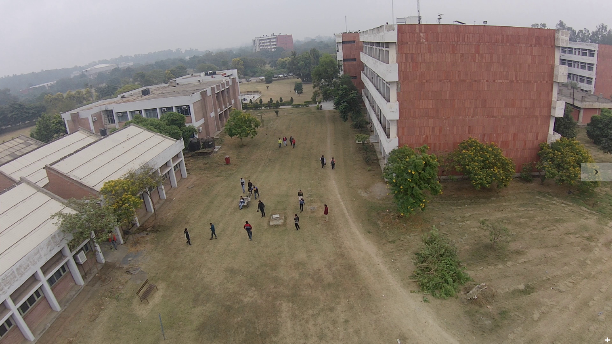
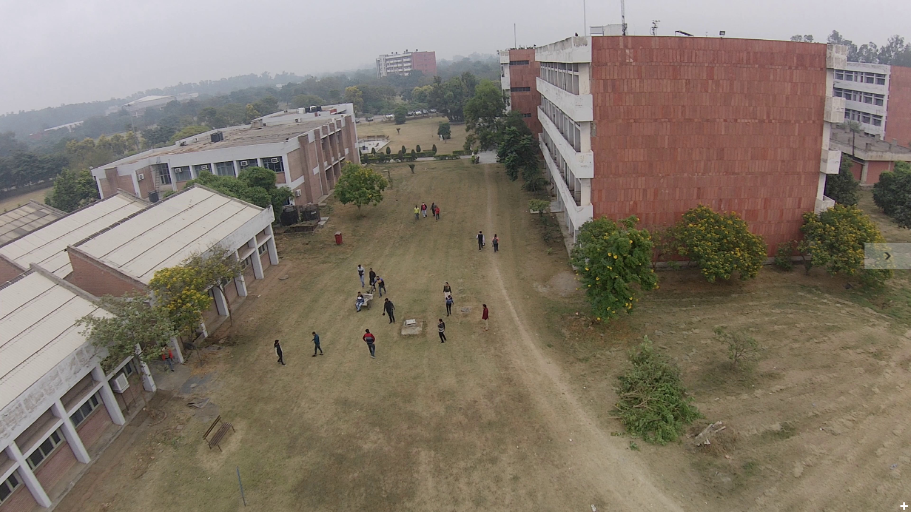
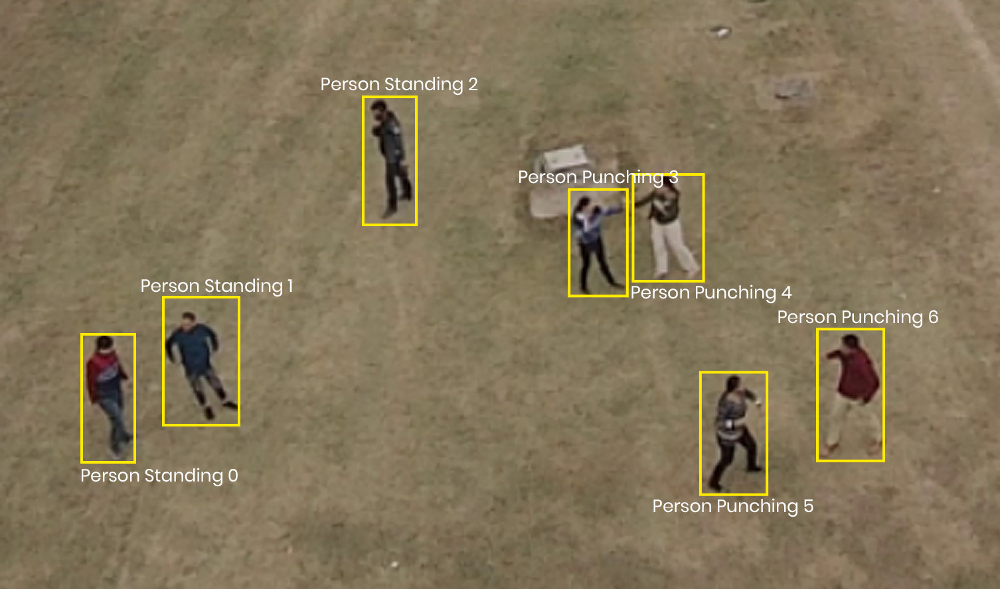
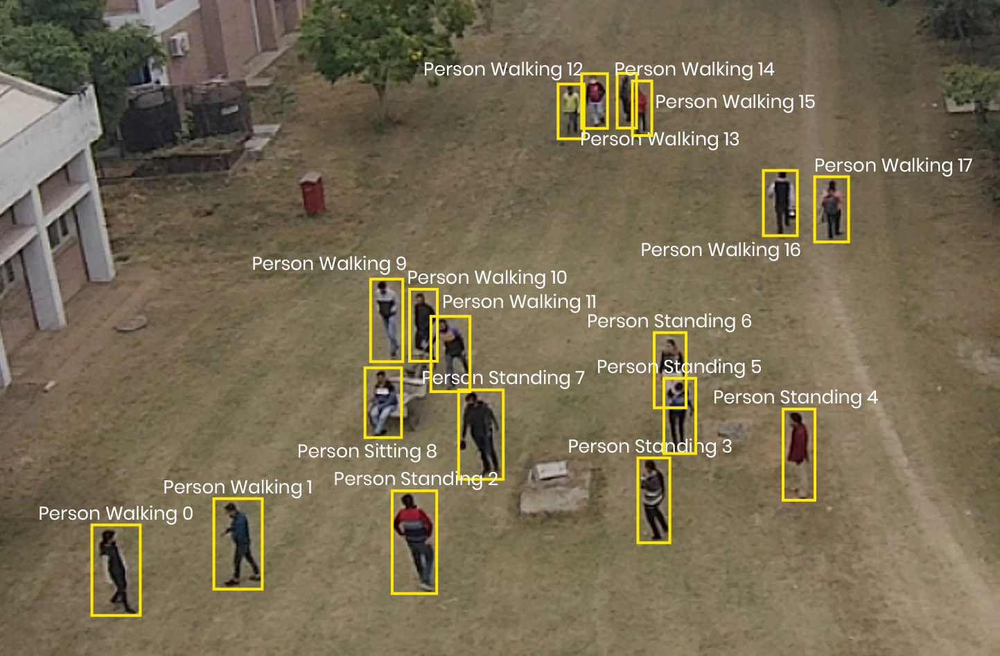
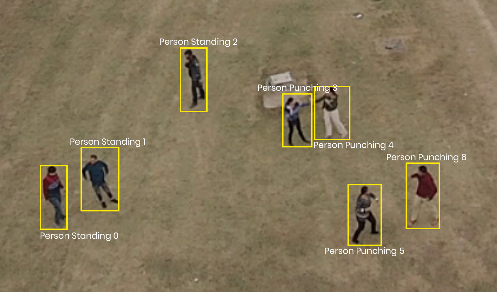
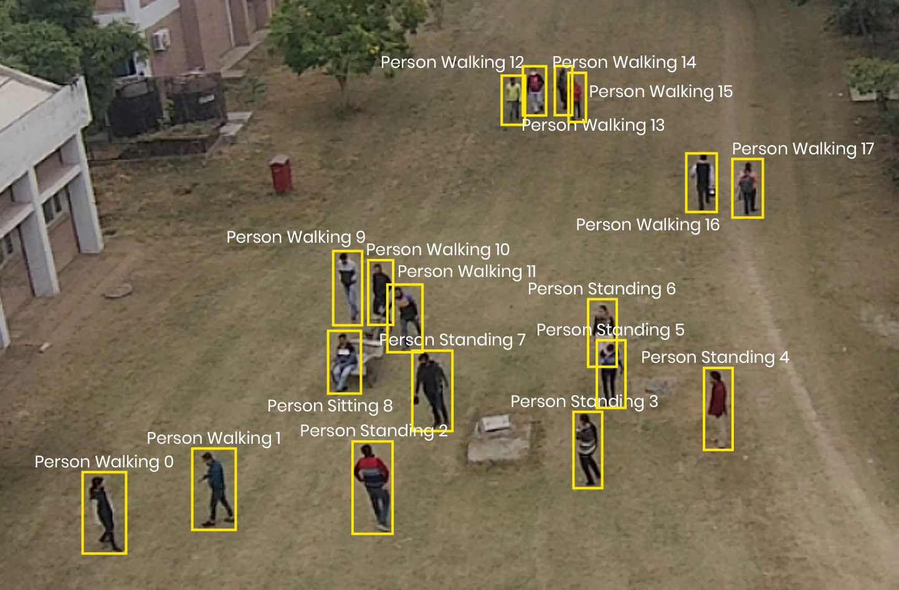

Aeriform In-Action
A novel dataset for Human Action Recognition in Aerial Videos
Human actions being diverse in nature cannot be generalized, thus making it quite difficult to train a
machine to recognize such diversified actions. Lack of availability of datasets is a bottleneck in the
exploration of this human action recognition as collecting and annotating a large dataset is a formidable
task. To solve the problem of data scarcity, we present a novel dataset for Human Action Recognition in
Aerial Videos which is a caption of real world scenarios. The proposed dataset consists of 32 high
resolution videos containing 13 action classes with 55,477 frames (without augmentation) and 388,339(approx)
annotations. The dataset addresses several concerns like camera motion, illumination changes, diversity in
actions, dynamic transitions of actions etc. The dataset is captured from a medium altitude having 13 action
classes categorized as atomic actions, human- human interactions and human-object interactions. The dataset
simulates a natural scenario in which each person is performing a random action and the actors are partially
occluded by each other. It contains aggressive and complex actions like kicking and punching, drone
signaling actions like waving, human-human interactions like handshaking and hugging and human-object
interactions like carrying. This dataset will provide a baseline for recognizing human actions in aerial
videos and will encourage the embedding researchers to progress the field.
| Attributes | Values |
|---|---|
| No. of Actions | 13 |
| Frame Rate | 30 |
| Resolution | 3840 x 2160 |
| Total no. of frames | 55,477 |
| Annotation | Bounding box |
| No. of Actors | 7-8 |
| Average video durarion | 60 sec |
| Environment | Outdoor |
| Number of annotations | 388,339(approx) |
| Altitude | 20-25m |
Dataset Annotations
The videos are annotated using DarkLabel [23] which is an open source tool. All the videos are converted into frames and the annotations are provided for each frame. The annotations are mapped back to the original images for validating the dataset.
| Name of the object | Action of the object | ID of the object | Bounding Box Coordinates(x,y,w,h) |
|---|---|---|---|
| Person | Punching | 0 | 2121, 1579, 60, 112 |
| Person | Punching | 1 | 2001, 1420, 60, 97 |
| Person | Punching | 2 | 2061, 1398, 60, 101 |
| Person | Punching | 3 | 2216, 1537, 76, 124 |
| Person | Standing | 4 | 1637, 1523, 73, 101 |
| Person | Walking | 5 | 1567, 1542, 55, 121 |
| Person | Walking | 6 | 1813, 1329, 51, 115 |
| Person | Lying | 7 | 1278, 1826, 90, 117 |
Original Frames


 

Zoomed in versions of annotated frames


 



Developing Team
Surbhi Kapoor has completed her B.Tech from Guru Nanak Dev Engineering College,Punjab, India in 2014 and M.Tech in 2016 in Computer Science and engineering. She is awarded with Junior Research Fellow (JRF) award from university grant commission (UGC), New Delhi in 2018 and she is pursuing her Ph.D in Computer Science and Engineering from University Institute of Engineering and Technology, Chandigarh, India. Her research interests include object detection, image and video analytics.

Akashdeep is currently working as an assistant professor in Computer Science and Engineering at University Institute of Engineering. & Technology, Panjab University, Chandigarh, India.He has published more than 22 research papers in international journals and conferences. He has 12+ years of teaching and research experience. His research interests include wireless networks, soft computing and video analytics, moving object detection and tracking, traffic sensing and classification.

Amandeep Verma is currently working as an associate professor in Information and Technology at University Institute of Engineering. & Technology, Panjab University, Chandigarh, India. She has done her PhD in Computer Science & Engineering in 2016. Her area of interest includes parallel and distributed computing, computer networks, workflow scheduling in cloud computing, and IoT.
Sarbjeet Singh is currently working as a professor in Computer Science and Engineering at UIET, Panjab University, Chandigarh, India. He has received Ph.D degree in Computer Science and Engineering from Thapar University, Patiala, India in 2009.He has more than 30 research publications in international journals and conferences to his credit. His research interests include parallel and distributed systems, distributed security architectures, privacy and trust related issues in distributed environments, object detection and video surveillance.